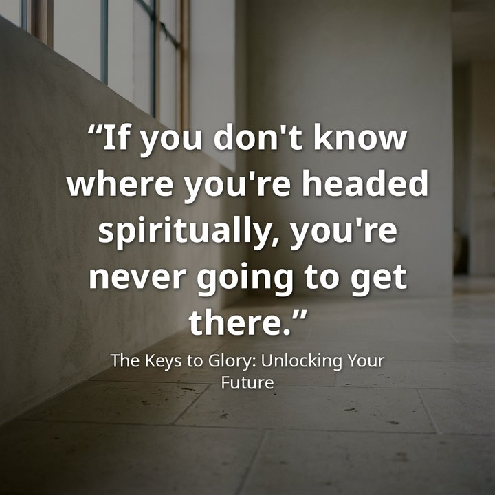
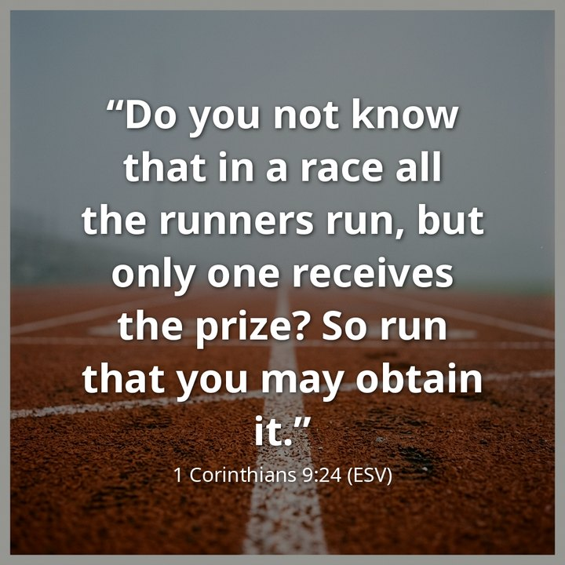
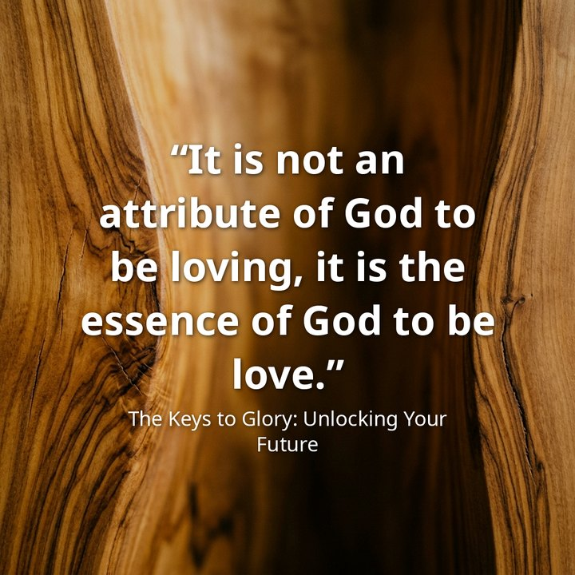
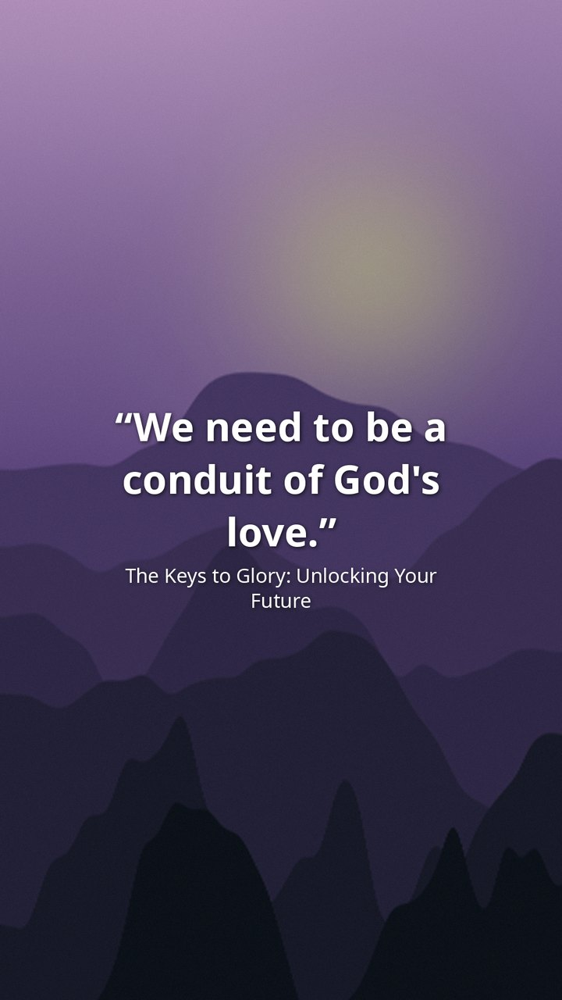
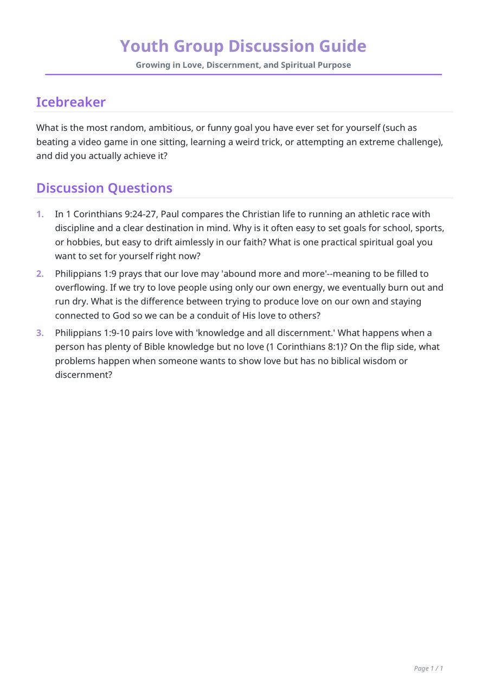
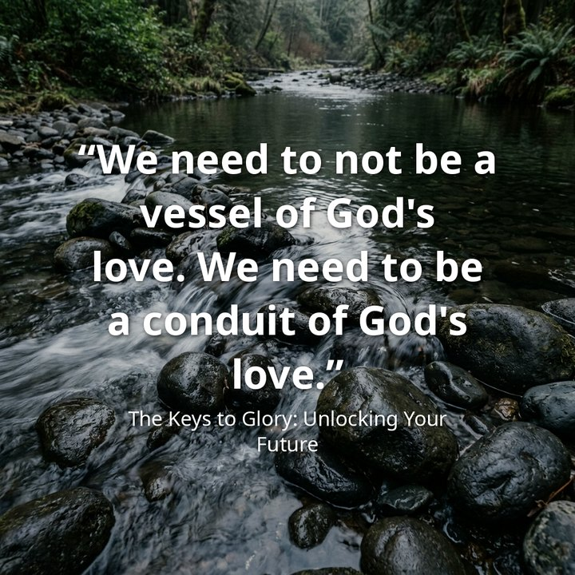
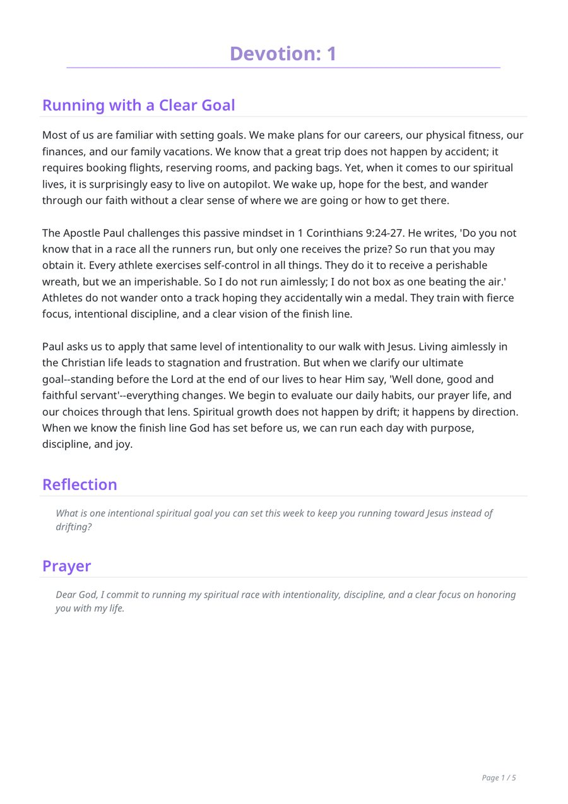
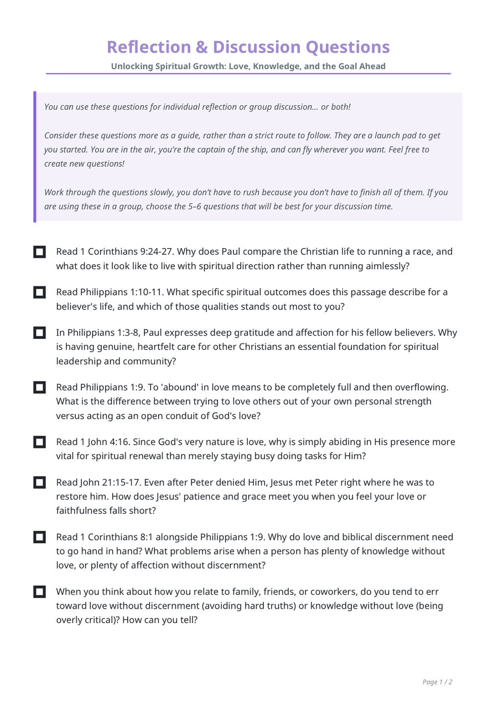

One sermon in.
A week of discipleship out.
Drop in Sunday's recording and get the week's material: study guide, devotionals, quote cards and vertical highlight clips. Then ask for anything else in a sentence. All on your own Mac, with nothing uploaded anywhere.



Or just ask for what you need
The week's material is the default. Anything else is one sentence in the app, in your words: it reads the whole sermon and makes exactly that.


From one video you get
Documents
The transcript, ten discussion questions, short and extended summaries, four key quotes and five daily devotionals — each as PDF and Word, ready for a small group or the church newsletter.
Quote cards
Sixteen quote cards in your colours and shape of choice, on generated backgrounds or your own photos, with your logo. Redraw the designs with a click until you like them.
Highlight clips
Vertical clips (1080×1920) that follow the speaker, end on a complete thought, and come with and without burned-in subtitles. Ask for a clip about a particular point and it finds it.
Anything else, in a sentence
A clip about a particular point, a document to your own brief, a card with the line you remember, or a question for the sermon itself. Say it in your words; it reads the whole sermon and makes it. Plus the whole sermon as an MP3.
What it looks like
Everything below is Sermonship's actual output from one Sunday sermon. The speaker in the clip is an illustration.
Quote cards, ready to post
Four quotes the model found and checked against the transcript, each drawn on four designed backgrounds in your colours. Square, portrait, story or landscape; your logo in the corner if you want it.

Highlight clips that follow the speaker
Sermonship picks the moments that stand on their own, reframes the wide recording to vertical around whoever is speaking, and burns in word-timed subtitles. You get each clip with and without them.
Documents your small group can use on Wednesday
Five daily devotionals with a reflection and a prayer each, ten discussion questions that start easy, two summaries, the quotes and the full transcript. Every one as a PDF and as a Word file you can edit.


While it works
A one-hour sermon takes about twenty minutes on a recent Mac with the built-in model, and about six with a Gemini key. The next update brings the built-in model down to about ten by editing the clips while the documents are being written. Either way you can keep using the Mac.
Private by design
The video, the audio, the transcript and everything written from them stay on the Mac. The writing is done by an open model (Gemma) running locally; there is no account, no upload and nothing sent to NiceTake. Sermonship works on a plane.
If you prefer, you can use your own Google Gemini key instead; then only the transcript text is sent to Google, never the video. The app explains this where you turn it on.
What you need
- A Mac with Apple silicon (M1 or later) running macOS 14 Sonoma or newer.
- 16 GB of memory for the Standard writing model, 24 GB for the Advanced one. A Mac with less can write with a Gemini key.
- About 10 GB of free disk space for the app and the Standard writing model, which it downloads once on first use (6.4 GB; the Advanced model is 15.6 GB). After that it starts straight away, offline.
Installing
- Download the disk image above and open it.
- Drag Sermonship into Applications, then open it from there. It is signed and notarised by Apple, so it opens like any other Mac app.
- Choose a writing model on first launch and let it download while you make coffee. Then drop in a sermon. Your results land in Documents › Sermonship, one folder per sermon.
Sermonship checks for new versions itself and offers to install them (Sermonship menu › Check for Updates…). Updates never touch your sermons or settings.
What's new in 0.1.1
- Quote cards: a ✦ button in the card editor draws four more designed backgrounds in your colours; "New Designs" above the cards redraws the whole set (with Undo).
- My Backgrounds: photos you choose are kept in your Sermonship folder and offered again next time; right-click a designed background to keep it too.
- The log (Help › Show Logs) now records what Sermonship found on launch, to make problems easier to report.